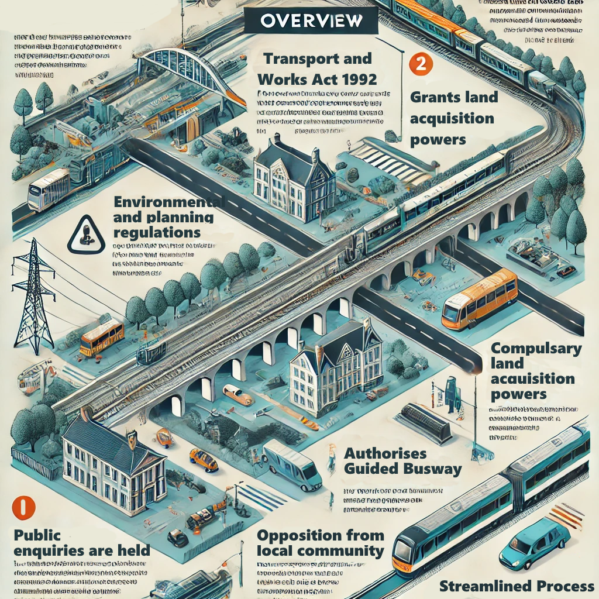
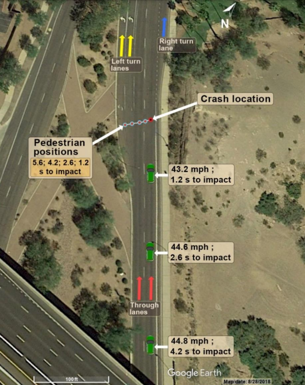
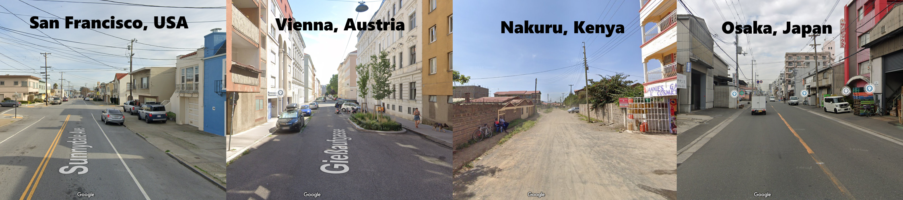
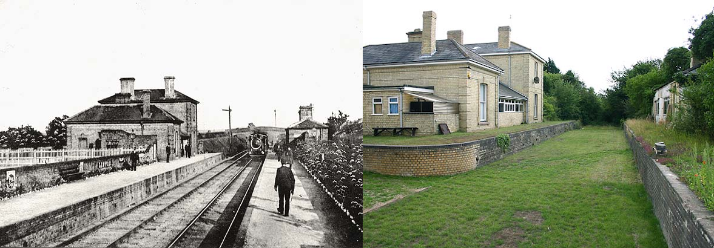

CSET - Cambridge Southeast Transport
and like ethics and stuff
What is CSET?
- Cambridge is expected to grow significantly in the coming decades
- New homes need to be built in the surrounding area
- A new transport project is planned to connect these new communities to the Cambridge Biomedical Campus
The Greater Cambridge Partnership is proposing a bus-only road to connect the CBC with the villages of
Shelford, Stapleford, Sawston and Babraham, as well as the Babraham Research Institute and Granta Park. The
route will end at a park-and-ride site near the A11 and A1307 for onward travel to Linton and Haverhill.
Technology used by the CSET
Unlike the Cambridgeshire Guided Busway to St Ives, the CSET will not make use of physical guidance
technology. Instead, buses will be optically guided by markings in the road.
 Optical guided buses (trackless trams) in 宜宾,
China. Source: Wikimedia
Optical guided buses (trackless trams) in 宜宾,
China. Source: Wikimedia
Benefits of optical guidance
- Reduced infrastructure cost
- Route can be used by service and emergency vehicles
- Higher precision than normal buses
- Reduced need for driver intervention
Drawbacks of optical guidance
- More expensive onboard technology
- More road maintenance required
- Poor reliability in snow, rain and fog
- Cannot handle unexpected circumstances such as roadworks
but the real reason optical guidance is being used is:
-
The GCP is using the Transport and Works Act 1992, which is designed for (re)building railways
and
tram systems. If the system were to just use a normal road, the scheme would not be eligible for
government approval and funding of land aquisition, construction and operation.

AI-generated and self-edited infographic demonstrating the powers and features of the Transport and
Works Act of 1992
Legal Issue - Legal loopholes may encourage unnecessary use of technology. This costs more money to the
taxpayer for little benefit.
Cambridgeshire Autonomous Metro
A large portion of the CSET plan is carried over from a scheme proposed by the GCP in 2017 and subsequently
cancelled. This scheme (called the Cambridgeshire Autonomous Metro or CAM) was to be much more ambitious,
featuring level 4 autonomy which gives buses the ability to operate without human intervention. Furthermore,
these buses would run further into the city, serving the rail station and city centre.
Dangers of autonomous vehicles
Elaine Herzberg was the first person to be killed by a driverless vehicle, in March 2018.1 She walking across a road in Tempe Arizona
where there was
no crosswalk, and pushing a bicycle by her side.1 There
is no established walkway from the nearest
crosswalk to
the brick median where Elaine was crossing,1 and the
route was overgrown with bushes and cacti.

The site of the collision on North Mill Avenue, Tempe
Arizona. Source: NTSB Crash Report
Elaine was detected by the car's sensors 5.6 seconds before the collision, but the software struggled to make
sense of the data it was receiving and failed to evaluate what she was and whether she was in the path of
the car. She was classified at various points as a vehicle, a bicycle, and "other", and only at 1.2 seconds
to impact was she correctly identified as crossing the vehicle's path.1 The car's passenger was not paying attention and
only took control of steering just 0.02 seconds before the vehicle collided with Elaine at 39mph.1
Social Issue - While driverless cars may be better at detecting hazards than human drivers,
they may not take correct action to avoid them.
Algorithmic Bias
Traffic collisions similar to Elaine's example may be amplified by algorithmic bias. For example, AI systems
have previously failed to identify darker skin colours due to their absence in the training data used. What
would it mean for society if our traffic classifies members of BAME communities as "other"?
Furthermore, driverless cars are largely being tested in the United States of America for a variety of
reasons, but this could have unexpected impacts on their adoption elsewhere. Urban planning and street
layout vary all across the world, and American streets are designed to prioritise cars and road traffic. If
driverless cars are "growing up" in a place where the car is king, what are they going to do when they have
to share the road with other pedestrians and cyclists? Furthermore, driverless cars are unlikely to be
tested extensively in less developed countries, where driving is more difficult and profits are lower.
Ethical Issue - Algorithms are as biased as the data they are given, and these biases can be
very difficult to change.

A comparison of street layouts in 4 cities across the
world to show the differences that driverless cars will have to adapt to. Sources: Google, Google, Google, Google
Cyber Attacks on autonomous vehicles
In June 2019, experts from Regulus Cyber managed to hack the GPS navigation system of a Tesla Model 3
to demonstrate the vulnerability of driverless car technologies.2 Using a method known as
spoofing where false GPS signals were sent to the car, they were able to force the car to head to a
different destination than the one chosen by the driver. 2 They were also able to
track the driver's location, compromising their privacy and safety.
This has severe implications for a driverless bus. A hacker could potentially re-route the bus or
purposefully cause road nuissance with such a large vehicle. This could seriously disrupt significant parts
of the transport system - if a bus was hacked on the CSET, it could block the whole busway for all other
vehicles
What does this mean for Cambridge?
As Cambridge looks to the future of its transportation infrastructure, the introduction of autonomous buses
and cars could present serious safety concerns. In a city known for its narrow streets, a high volume of
cyclists and unpredictable pedestrian traffic, it provides a challenging environment for autonomous vehicles
to be tested in. But Cambridge wouldn't be the first city in the world, or even the UK to trial autonomous
buses.
In Edinburgh, the CAVForth scheme was launched in May 2023, connecting Edinburgh and Fife with level 4
autonomous buses.3 However, this
route runs primarily along major roads, and has at several points required manual intervention.4
Furthermore, the service was discontinued in February 2025 due to low ridership,4
perhaps suggesting that our cities and their residents are not ready for driverless buses.
 One
of the autonomous buses used on the CAVForth service
One
of the autonomous buses used on the CAVForth service
While it could be seen as preparation for the future, this does raise the question of whether Cambridge needs
driverless buses after all, if they are not currently the best option. While AV investment has largely come
from the private sector up until now, public transport projects like CSET are funded mainly by the
government and local councils, using money raised from residents' taxes. Their purpose is not to make the
most profit, but provide the best service to the majority of residents at the lowest cost, and proprietary
technology does not offer this level of certainty and quality.
Social Issue - Funding for emerging technology from the public sector is at the detriment of
taxpayers
A better solution?
This section is about my opinion on the CSET specifically; you do not have to agree. No one who knows me will
be surprised to hear that I like trains. But in this case, I passionately believe that high-tech bus roads
are simply an inferior solution compared to simply rebuilding the lost railway to Haverhill. While doing
this would cost more money, the benefits it would provide are far more long-term and sustainable than the
CSET busway.
Firstly, trains have a higher passenger capacity than buses, and can easily be scaled to carry more people.
After the construction of Northstowe, the Cambridgeshire Guided Busway is already struggling with
capacity-related issues,5
and there is little that can be done to aleviate these. If the plan truly is to
develop the commuter belt along the A1307 corridor, a busway is simply not going to be able to cope.
Secondly trains are simply faster. The predicted scheme predicts a journey time from Sawston to Cambridge of
30 minutes,6
while the train from Pampisford in 1948 took just 18.7 The
Cambridgeshire Guided Busway has also failed to decrease journey times, with Cambridge to Huntingdon taking
85 minutes in spite of the busway. 8
Thirdly, railways are heavily standardised, and a new railway will be compatible with existing tracks. If a
railway is built, trains can access it from the existing tracks so no work needs to be done in the most
expensive part of Cambridge. If the busway was built and then an extension to the city centre was needed,
the optical guideway would need to be built and maintained all the way into Cambridge, regularly costing the
council a lot of money.
Leading on from the previous point, the proposed bus stops are not conveniently located for the villages they
serve, often being located on the very edge. While it may spur development, the existing station at Shelford
is conveniently located within walking distance of Great Shelford, Little Shelford and Stapleford, and
millions have already been spent on a new Cambridge South station at the biomedical campus.
Fifthly, transport by rail is much more energy efficient and sustainable. In the context of the climate
crisis, we must consider the CO2 emissions of our transportation choices, and trains are by far the best
option on this front. Even electric buses lose significant amounts of energy from tyre deformation.

Linton station in 1914 (left) and 2005 (right). Source:
Disused Stations